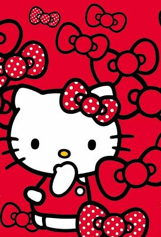

Conoce a Hello Kitty
Hello Kitty es un personaje ficticio producido por la compañía japonesa Sanrio, creado por Yuko Shimizu y diseñado por Yuko Yamaguchi. Es un personaje de dibujos animados muy popular entre niñas y adolescentes en todo el mundo.
Explora el mundo encantado de Hello Kitty
Sumérgete en un mundo lleno de ternura y diversión con Hello Kitty. Descubre sus aventuras, amigos, y la magia que la rodea.